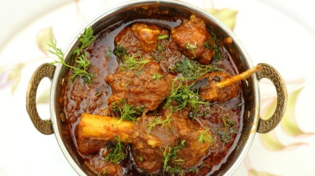
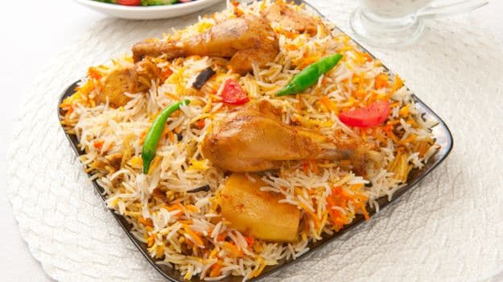
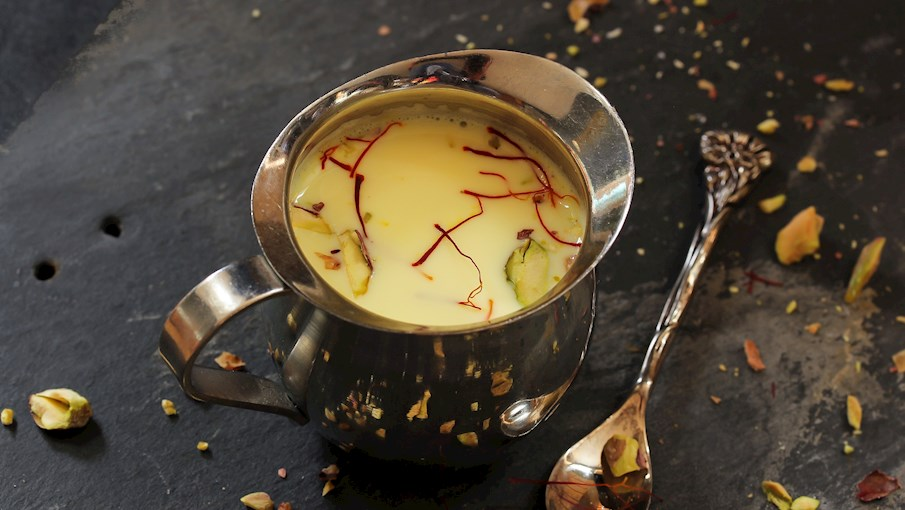
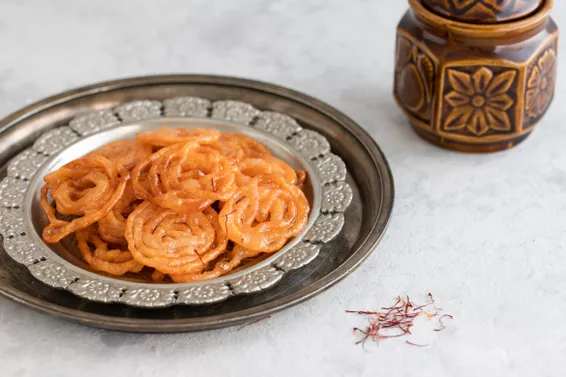

North Special
North Indians also love dairy items, which is clearly evident as no traditional meal is served without chaas, lassi,paneerand milk-based desserts like kheer, kulfi. Yes, talk about desserts and the wide range of irresistible treats are sure to bowl you over.
Breakfast

chole-Bathure
$12
Mouth-watering meal straight from the Punjabi kitchen - garma garam bhature with chickpeas cooked in assorted spices. What's better than that?
Dahi-Bhalla
$12
The most loved street snack of India, particularly North India. Dahi Bhalla can also be served as a chilled snack or a starter during festive occasions like Diwali or Navratri. Try your hand at making delicious bhallas topped with sweet curd, sour and tangy chutneys and chaat masala.

Aloo Parantha
Aloo paratha is one of the most popular breakfast foods in northern India, a flatbread stuffed with a spicy potato mixture. Its name is derived from aloo, denoting a potato, parat, denoting layers, and atta, denoting flour.

Samosa
$12
The perfect companion for your evening tea. A fried snack stuffed with a mixture of potato and peas.
Rice-Pudding
$12
It is a perfect dessert after a filling meal. Rice kheer made with condensed milk, khoya, cream and nuts. A bowl of kheer is the ultimate winner when it comes to Indian desserts. Be it a a festival, a celebration or just our taste buds craving a bowl of dessert delicacy.

Kulfi
$12
It is happiness served in a matki! Cooked with dry fruits, condensed milk and saffron, kulfi is a must try. Prepare this on special occasions as desserts and everyone would just love it.
Lunch

Amritsari Kulcha
$12
For an authentic North Indian meal, Amritsari Kulcha is a popular naan bread recipe which is perfect to pair with some delicious Chole. A crisp Punjabi delight, stuffed kulchas are the Indian bread, now made healthy with canola oil. Try it out!

Shahi paneer
$12
Originating from India's Moghul cuisine, shahi paneer is a cheese curry that is prepared with paneer cheese, onions, almond paste, and a rich, spicy tomato-cream sauce. The dish is typically accompanied by Indian breads such as naan, roti, or puri.

Roganjosh
$12
Originated in Kashmir, we bring you the signature dish of the valley. This one is an all-time favourite among meat lovers.

Biryani
$12
Flavourful biryani with chicken cooked in assorted spices and garnished with sliced green chillies and ginger juliennes. A quick and easy home made biryani is something you cannot escape

Thandai
$12
Thandai is a North Indian milk-based beverage that incorporates nuts, seeds, and various spices. The preparation starts with a thick paste that is usually made with a different combination of nuts and spices such as cashews, almonds, cardamom, peppercorns, poppy seeds, and fennel seeds.

Kulfi falooda
$12
Usually associated with northern Indian regions, this refreshing treat combines thin falooda noodles and kulfi, a traditional Indian ice cream made with slowly simmered whole milk that is flavored with pistachio, rose water, and saffron. The whole dessert is often elevated with various additions such as sweet basil seeds, jelly, or rose water, and it is frequently garnished with crushed nuts.
Dinner
Biryani
$12
Flavourful biryani with chicken cooked in assorted spices and garnished with sliced green chillies and ginger juliennes. A quick and easy home made biryani is something you cannot escape

Palak-paneer
$12
This mildly flavored dish is delicious! If paneer (farmer's cheese or dry curd cheese) is not on hand or you want a dairy-free option, you also can use tofu or veggies like cauliflower or potato.
Butter-chicken
$12
Marinated overnight, the chicken is roasted and cooked in tomato puree, cream and masalas. A perfect dinner party recipe, this North-Indian style chicken recipe is made throughout the country with equal zest. Enjoy this creamy chicken dish, marinated overnight and then cooked to perfection.
Pan-Fried-Fish
$12
This fried fish dish is named after the city where it originated. Use firm-fleshed white fish to make this great appetizer or side dish to complement the main course

Gajar ka halwa
$12
Gajar ka halwa is a sweet pudding made with grated carrots, milk, sugar, nuts, clarified butter known as ghee, and dried milk known as khoya. The dessert originated in Northern India and Pakistan, but today it's consumed throughout India as an everyday treat or a traditional sweet during numerous Indian festivals.

Jalebi
$12
This crispy, syrupy dessert is well-loved everywhere in India. It can be compared to that perennial favorite fair food served in the States—funnel cakes—except at the end, these fried treats are soaked in a sugary syrup